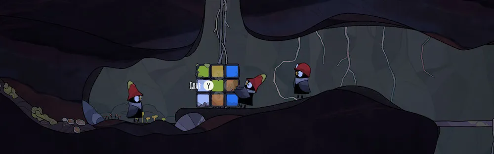
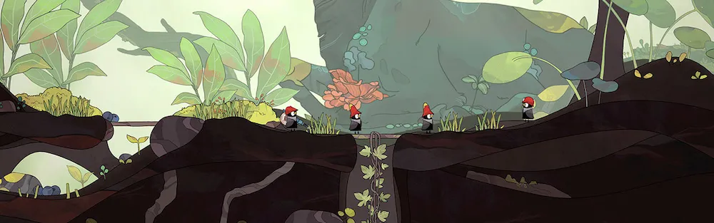
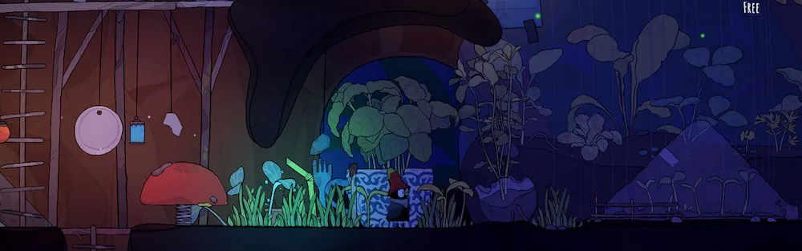

// The Tinies
// Video game (pre-production)
The Tinies is 2D exploration and building game, developed by Darjeeling production and still in pre-production.
I join this project in the early stages to setup the methods and workflows of the artistic team.
Then I participated to the construction of the first prototype, for which I took care of the assets integration, the level building and environmental animations.
>> Technical lead of the art team
>> Assets integration
>> Level design and building
Halfway between a village builder and an contemplative exploration game, The Tinies invites the player to discover a small troupe of miniature beings and to help them develop in a world where remnants of an ancient civilization are still visible.
An immense universe by its proportions but borrowed from beauty and melancholy to discover at your own pace, where understanding of nature and balance will be essential in order to progress in the adventure.
These small growing people seeks to find their place in a world far too big for them. They will have to show curiosity, solidarity and ingenuity to bring happiness and well-being to the entire tribe.
